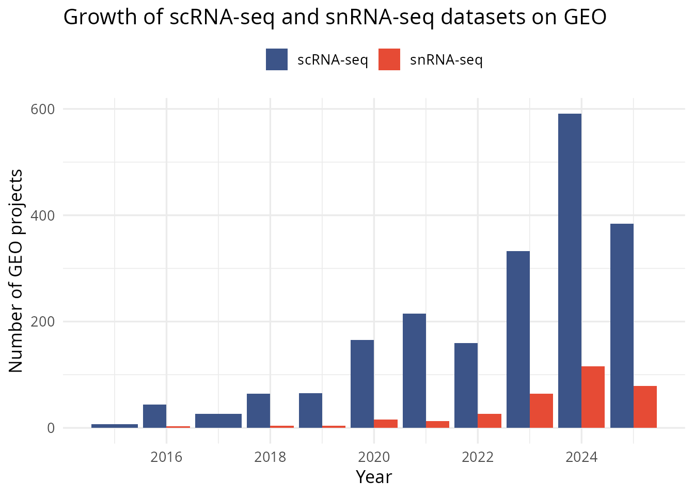
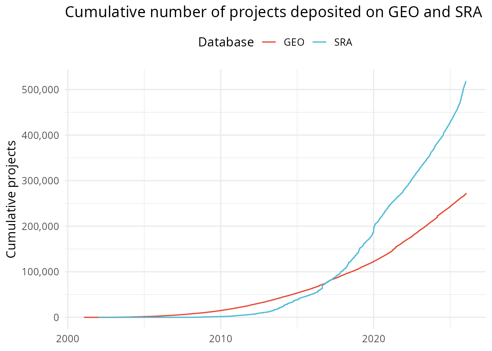

# install.packages("pak")
pak::pak("saketlab/seqout/R")All queries start by creating a connection. This sets up a local
DuckDB instance that reads remote Parquet files from
seqout.org — no full download is required.
library(seqout)
con <- connect_seqout()
#> ✔ Connected to SeqOut (<https://seqout.org>) — 19 tables available
con
#> <seqout_connection>
#> Server: <https://seqout.org>
#> Status: connected
#> Tables: 19Suppose we are interested in finding single-cell RNA-seq datasets
related to liver cancer. sq_find_projects() lets us search
by keywords and apply structured filters — no SQL needed:
results <- sq_find_projects(con,
keywords = "liver cancer scRNA",
organism = "Homo sapiens",
sort_by = "citations",
limit = 10
)
results
#> # A tibble: 10 × 9
#> accession source title organism assay country published n_samples
#> <chr> <chr> <chr> <chr> <chr> <chr> <date> <dbl>
#> 1 GSE156625 geo Onco-fetal repr… Homo sa… RNA-… Singap… 2020-09-24 78
#> 2 GSE169446 geo XCR1+ type 1 co… Homo sa… RNA-… Israel 2021-05-21 2
#> 3 GSE166635 geo TNFR2 HnRNPK-YA… Homo sa… RNA-… China 2021-06-09 2
#> 4 GSE255536 geo In vivo dendrit… Homo sa… RNA-… Sweden 2024-09-05 6
#> 5 GSE179597 geo Human branching… Homo sa… RNA-… China 2022-05-04 9
#> 6 GSE245552 geo Th17 cells secr… Homo sa… RNA-… China 2024-01-05 39
#> 7 GSE216069 geo Multi-modal sin… Homo sa… RNA-… United… 2022-10-19 71
#> 8 GSE169084 geo A human liver c… Homo sa… RNA-… United… 2021-07-19 12
#> 9 GSE173671 geo A human liver c… Homo sa… RNA-… France 2021-07-01 2
#> 10 GSE221575 geo Single cell ana… Homo sa… RNA-… China 2022-12-22 5
#> # ℹ 1 more variable: citation_count <dbl>Keywords are matched with AND logic: every word must appear somewhere in the project title or description. We can further narrow the search by adding filters:
# Only GEO projects from 2020 onwards with at least 10 samples
sq_find_projects(con,
keywords = "liver cancer scRNA",
organism = "Homo sapiens",
source = "geo",
year_from = 2020,
min_samples = 10,
sort_by = "citations"
)
#> # A tibble: 14 × 9
#> accession source title organism assay country published n_samples
#> <chr> <chr> <chr> <chr> <chr> <chr> <date> <dbl>
#> 1 GSE156625 geo Onco-fetal repr… Homo sa… RNA-… Singap… 2020-09-24 78
#> 2 GSE245552 geo Th17 cells secr… Homo sa… RNA-… China 2024-01-05 39
#> 3 GSE216069 geo Multi-modal sin… Homo sa… RNA-… United… 2022-10-19 71
#> 4 GSE169084 geo A human liver c… Homo sa… RNA-… United… 2021-07-19 12
#> 5 GSE162616 geo Single-Cell Tra… Homo sa… RNA-… China 2022-09-26 13
#> 6 GSE263733 geo Single-cell tra… Homo sa… RNA-… South … 2024-04-25 218
#> 7 GSE155506 geo Benchmarking fu… Homo sa… RNA-… Denmark 2020-08-01 40
#> 8 GSE261957 geo Multiomic analy… Homo sa… RNA-… Germany 2025-02-07 10
#> 9 GSE287541 geo Transcriptomic … Homo sa… RNA-… United… 2025-01-22 92
#> 10 GSE128790 geo GTO sequencing … Homo sa… Other United… 2020-03-30 112
#> 11 GSE128785 geo Bulk DNA sequen… Homo sa… Other United… 2020-03-30 12
#> 12 GSE128791 geo Bulk RNA sequen… Homo sa… RNA-… United… 2020-03-30 12
#> 13 GSE303680 geo PD1-targeted ci… Homo sa… RNA-… Switze… 2025-07-30 10
#> 14 GSE193534 geo Distant antimet… Homo sa… RNA-… France 2023-11-01 33
#> # ℹ 1 more variable: citation_count <dbl>Not sure what to pass for assay or
organism? The sq_list_* helpers return valid
values with project counts:
# Specific assay types (RNA-seq, ChIP-seq, WGS, ...)
sq_list_assays(con)
#> # A tibble: 58 × 2
#> assay n_projects
#> <chr> <dbl>
#> 1 RNA-seq 254067
#> 2 WGS 169652
#> 3 Amplicon Sequencing 110024
#> 4 Expression Microarray 77419
#> 5 Other 59817
#> 6 ChIP-seq 40682
#> 7 Whole Genome Amplification 10867
#> 8 ncRNA-seq 7239
#> 9 WXS (Exome) 6766
#> 10 Bisulfite-seq 6433
#> # ℹ 48 more rows
# Broad assay categories (Transcriptomic, Genomic Sequencing, ...)
sq_list_assays(con, level = "broad")
#> # A tibble: 15 × 2
#> assay n_projects
#> <chr> <dbl>
#> 1 Transcriptomic 275727
#> 2 Genomic Sequencing 183166
#> 3 Targeted Sequencing 120404
#> 4 Microarray 78098
#> 5 Other 59970
#> 6 Chromatin Binding 43257
#> 7 DNA Methylation 10984
#> 8 Genotyping 7885
#> 9 Chromatin Conformation 2093
#> 10 Chromatin Accessibility 1298
#> 11 Functional Genomics 585
#> 12 Proteomic 522
#> 13 RNA Binding 481
#> 14 Single Cell 12
#> 15 Metabolomic 2
# Top organisms
sq_list_organisms(con, limit = 10)
#> # A tibble: 10 × 2
#> organism n_projects
#> <chr> <dbl>
#> 1 Homo sapiens 149851
#> 2 Mus musculus 108587
#> 3 soil metagenome 24634
#> 4 Arabidopsis thaliana 10836
#> 5 metagenome 10011
#> 6 Rattus norvegicus 8304
#> 7 Sorghum bicolor 8277
#> 8 Drosophila melanogaster 8277
#> 9 gut metagenome 7203
#> 10 Saccharomyces cerevisiae 6489
# Top countries
sq_list_countries(con, limit = 10)
#> # A tibble: 10 × 2
#> country n_projects
#> <chr> <dbl>
#> 1 United States 264192
#> 2 China 221974
#> 3 United Kingdom 46210
#> 4 Germany 34972
#> 5 Japan 28405
#> 6 France 22030
#> 7 South Korea 18765
#> 8 Canada 18041
#> 9 India 14954
#> 10 Spain 13439From our search above, GSE151530 is a highly cited
single-cell liver cancer study. Let’s get its metadata.
Title and description:
sq_project_metadata(con, "GSE151530")
#> # A tibble: 1 × 3
#> accession title description
#> <chr> <chr> <chr>
#> 1 GSE151530 Understanding tumor evolution and its clonality by sing… Single-cel…Full metadata including contributors, organisms, instruments, and supplementary data links:
project <- sq_project(con, "GSE151530")
project
#> # A tibble: 1 × 26
#> accession overall_design summary title pubmed_id samples_ref series_type
#> <chr> <chr> <chr> <chr> <list> <list> <list>
#> 1 GSE151530 A total of 46 tumor… Single… Unde… <chr [2]> <chr [46]> <chr [50]>
#> # ℹ 19 more variables: relation <chr>, supplementary_data <chr>,
#> # published_at <date>, updated_at <date>, bioproject_id <chr>,
#> # organisms <list>, alias <chr>, coords_2d <list>, coords_3d <list>,
#> # neighbors <chr>, countries <list>, contributors <list>, departments <list>,
#> # organizations <list>, pubmed_id_pysradb <chr>, countries_iso <list>,
#> # library_strategies <list>, instrument_models <list>, alias_all <list>Samples in this project:
samples <- sq_project_samples(con, "GSE151530")
samples
#> # A tibble: 46 × 12
#> accession channel_count channels description platform_ref published_at
#> <chr> <dbl> <chr> <chr> <chr> <date>
#> 1 GSM4581240 1 "{\"{\\\"Sour… NA GPL24676 2021-02-07
#> 2 GSM4581241 1 "{\"{\\\"Sour… NA GPL24676 2021-02-07
#> 3 GSM4581242 1 "{\"{\\\"Sour… NA GPL24676 2021-02-07
#> 4 GSM4581243 1 "{\"{\\\"Sour… NA GPL24676 2021-02-07
#> 5 GSM4581244 1 "{\"{\\\"Sour… NA GPL24676 2021-02-07
#> 6 GSM4581245 1 "{\"{\\\"Sour… NA GPL24676 2021-02-07
#> 7 GSM4581246 1 "{\"{\\\"Sour… NA GPL24676 2021-02-07
#> 8 GSM4581247 1 "{\"{\\\"Sour… NA GPL24676 2021-02-07
#> 9 GSM4581248 1 "{\"{\\\"Sour… NA GPL24676 2021-02-07
#> 10 GSM4581249 1 "{\"{\\\"Sour… NA GPL24676 2021-02-07
#> # ℹ 36 more rows
#> # ℹ 6 more variables: updated_at <date>, supplementary_data <chr>, title <chr>,
#> # sample_type <chr>, hybridization_protocol <chr>, scan_protocol <chr>SeqOut annotates samples with standardized ontology terms for tissue,
disease, cell type, assay, and more. sq_project_enriched()
retrieves these annotations:
enriched <- sq_project_enriched(con, "GSE151530")
enriched
#> # A tibble: 46 × 46
#> study_accession sample age sex ethnicity phenotype cell_type tissue
#> <chr> <chr> <chr> <chr> <chr> <chr> <chr> <chr>
#> 1 GSE151530 GSM4581269 NA NA NA NA NA Liver
#> 2 GSE151530 GSM4581270 NA NA NA NA NA Liver
#> 3 GSE151530 GSM4581271 NA NA NA NA NA Liver
#> 4 GSE151530 GSM4581272 NA NA NA NA NA Liver
#> 5 GSE151530 GSM4581273 NA NA NA NA NA Liver
#> 6 GSE151530 GSM4581274 NA NA NA NA NA Liver
#> 7 GSE151530 GSM4581275 NA NA NA NA NA Liver
#> 8 GSE151530 GSM4581276 NA NA NA NA NA Liver
#> 9 GSE151530 GSM4581277 NA NA NA NA NA Liver
#> 10 GSE151530 GSM4581278 NA NA NA NA NA Liver
#> # ℹ 36 more rows
#> # ℹ 38 more variables: strain <chr>, disease <chr>, assay <chr>,
#> # assay_category <chr>, cell_line <chr>, treatment <chr>,
#> # development_stage <chr>, sample_type <chr>, genetic_modification <chr>,
#> # organism <chr>, taxid <chr>, tissue_primary_site <chr>,
#> # tissue_site_type <chr>, disease_ontology_id <chr>,
#> # disease_ontology_name <chr>, disease_ontology_score <chr>, …The enriched metadata includes columns like tissue,
disease, cell_type, assay,
assay_category, and sample_type, along with
their corresponding ontology IDs and confidence scores:
library(dplyr)
#>
#> Attaching package: 'dplyr'
#> The following objects are masked from 'package:stats':
#>
#> filter, lag
#> The following objects are masked from 'package:base':
#>
#> intersect, setdiff, setequal, union
enriched |>
select(sample, tissue, disease, cell_type, assay, assay_category, sample_type) |>
head(10)
#> # A tibble: 10 × 7
#> sample tissue disease cell_type assay assay_category sample_type
#> <chr> <chr> <chr> <chr> <chr> <chr> <chr>
#> 1 GSM4581269 Liver Hepatocellular … NA 10x … Single-cell T… Single Cell
#> 2 GSM4581270 Liver Hepatocellular … NA 10x … Single-cell T… Single Cell
#> 3 GSM4581271 Liver Hepatocellular … NA 10x … Single-cell T… Single Cell
#> 4 GSM4581272 Liver Hepatocellular … NA 10x … Single-cell T… Single Cell
#> 5 GSM4581273 Liver Liver Cancer NA 10x … Single-cell T… Single Cell
#> 6 GSM4581274 Liver Hepatocellular … NA 10x … Single-cell T… Single Cell
#> 7 GSM4581275 Liver Hepatocellular … NA 10x … Single-cell T… Single Cell
#> 8 GSM4581276 Liver Liver Cancer NA 10x … Single-cell T… Single Cell
#> 9 GSM4581277 Liver Liver Cancer NA 10x … Single-cell T… Single Cell
#> 10 GSM4581278 Liver Hepatocellular … NA 10x … Single-cell T… Single Cellsq_publications() parses the structured publication data
— DOI, PubMed ID, journal, and citation count — for one or more
accessions:
sq_publications(con, c("GSE151530", "GSE98638"))
#> # A tibble: 3 × 7
#> accession source doi pub_title journal pmid citation_count
#> <chr> <chr> <chr> <chr> <chr> <chr> <int>
#> 1 GSE98638 geo 10.1016/j.cell.2017.0… Landscap… Cell 2862… 2187
#> 2 GSE151530 geo 10.1016/j.jhep.2021.0… Single-c… Journa… 3421… 357
#> 3 GSE151530 geo 10.1016/j.ccell.2019.… Tumor Ce… Cancer… 3158… 850For a single project, sq_project_citations() returns the
same data:
sq_project_citations(con, "GSE151530")
#> # A tibble: 2 × 7
#> accession source doi pub_title journal pmid citation_count
#> <chr> <chr> <chr> <chr> <chr> <chr> <int>
#> 1 GSE151530 geo 10.1016/j.jhep.2021.0… Single-c… Journa… 3421… 357
#> 2 GSE151530 geo 10.1016/j.ccell.2019.… Tumor Ce… Cancer… 3158… 850To get a ready-to-use BibTeX string for a project’s publications,
pass format = "bibtex":
bib <- sq_project_citations(con, "GSE151530", format = "bibtex")
cat(bib)
#> @article{Lichun2019,
#> author = {Lichun Ma, Maria O Hernandez, Yongmei Zhao, Monika Mehta, Bao Tran, Michael Kelly, Zachary Rae, Jonathan M Hernandez, Jeremy L Davis, Sean P Martin, David E Kleiner, Stephen M Hewitt, Kris Ylaya, Bradford J Wood, Tim F Greten, Xin Wei Wang},
#> title = {Tumor Cell Biodiversity Drives Microenvironmental Reprogramming in Liver Cancer.},
#> journal = {Cancer cell},
#> year = {2019},
#> doi = {10.1016/j.ccell.2019.08.007},
#> pmid = {31588021}
#> }
#>
#> @article{Lichun2021,
#> author = {Lichun Ma, Limin Wang, Subreen A Khatib, Ching-Wen Chang, Sophia Heinrich, Dana A Dominguez, Marshonna Forgues, Julián Candia, Maria O Hernandez, Michael Kelly, Yongmei Zhao, Bao Tran, Jonathan M Hernandez, Jeremy L Davis, David E Kleiner, Bradford J Wood, Tim F Greten, Xin Wei Wang},
#> title = {Single-cell atlas of tumor cell evolution in response to therapy in hepatocellular carcinoma and intrahepatic cholangiocarcinoma.},
#> journal = {Journal of hepatology},
#> year = {2021},
#> doi = {10.1016/j.jhep.2021.06.028},
#> pmid = {34216724}
#> }This produces entries like:
@article{Lichun2019,
author = {Lichun Ma, Maria O Hernandez, ...},
title = {Tumor Cell Biodiversity Drives Microenvironmental ...},
journal = {Cancer cell},
year = {2019},
doi = {10.1016/j.ccell.2019.08.007},
pmid = {31588021}
}To save to a .bib file:
writeLines(bib, "GSE151530.bib")sq_assay_projects() retrieves one row per project for
each assay type, with the publication month. We can then aggregate and
plot yearly trends with dplyr and ggplot2:
library(dplyr)
library(ggplot2)
sc_projects <- sq_assay_projects(con,
assay = c("scRNA-seq", "snRNA-seq"),
year_from = 2015,
year_to = 2025
)
sc_growth <- sc_projects |>
mutate(year = as.integer(format(published, "%Y"))) |>
count(assay_type, year, name = "n_projects")
ggplot(sc_growth, aes(x = year, y = n_projects, fill = assay_type)) +
geom_col(position = "dodge") +
scale_fill_manual(
values = c("scRNA-seq" = "#3C5488", "snRNA-seq" = "#E64B35")
) +
labs(
x = "Year",
y = "Number of GEO projects",
fill = NULL,
title = "Growth of scRNA-seq and snRNA-seq datasets on GEO"
) +
theme_minimal(base_size = 13) +
theme(legend.position = "top")
For a broader view, sq_growth_stats() returns monthly
project counts per database. We can compute cumulative totals:
growth <- sq_growth_stats(con, mode = "projects") |>
filter(db %in% c("geo", "sra")) |>
arrange(db, month) |>
group_by(db) |>
mutate(cumulative = cumsum(count)) |>
ungroup()
ggplot(growth, aes(x = month, y = cumulative, colour = db)) +
geom_line(linewidth = 0.6) +
scale_y_continuous(labels = scales::comma) +
scale_colour_manual(
values = c(geo = "#E64B35", sra = "#4DBBD5"),
labels = c(geo = "GEO", sra = "SRA")
) +
labs(
x = NULL,
y = "Cumulative projects",
colour = "Database",
title = "Cumulative number of projects deposited on GEO and SRA"
) +
theme_minimal(base_size = 13) +
theme(legend.position = "top")
All the above functions run on DuckDB under the hood. You can also query the tables directly with SQL:
sq_query(con, "
SELECT organism, sum(count) AS total
FROM organism_growth_monthly
GROUP BY organism
ORDER BY total DESC
LIMIT 10
")
#> # A tibble: 10 × 2
#> organism total
#> <chr> <dbl>
#> 1 Homo sapiens 18916466
#> 2 Severe acute respiratory syndrome coronavirus 2 10750329
#> 3 Mus musculus 10236666
#> 4 soil metagenome 1929180
#> 5 Escherichia coli 1697905
#> 6 Salmonella enterica 1609261
#> 7 human gut metagenome 1556994
#> 8 metagenome 1555769
#> 9 Saccharomyces cerevisiae 1022219
#> 10 Salmonella enterica subsp. enterica serovar Enteritidis 897489Or use dplyr/dbplyr for lazy
evaluation:
library(dbplyr)
#>
#> Attaching package: 'dbplyr'
#> The following objects are masked from 'package:dplyr':
#>
#> ident, sql
tbl(con$db, "unified_metadata") |>
filter(
dominant_scientific_name == "Homo sapiens",
country == "Japan"
) |>
count(dominant_assay_l2, sort = TRUE) |>
head(10) |>
collect()
#> # A tibble: 10 × 2
#> dominant_assay_l2 n
#> <chr> <dbl>
#> 1 Expression Microarray 2289
#> 2 RNA-seq 1814
#> 3 ChIP-seq 323
#> 4 ncRNA Microarray 300
#> 5 Other 209
#> 6 Methylation Array 204
#> 7 Amplicon Sequencing 68
#> 8 SNP Array 58
#> 9 ncRNA-seq 57
#> 10 Bisulfite-seq 50For repeated analysis, materialise a remote view into local DuckDB storage to avoid repeated HTTP requests:
sq_cache_table(con, "unified_metadata")
#> ℹ Caching "unified_metadata" locally as "unified_metadata_local"...
#> ✔ Cached "unified_metadata": 1,054,919 rows
# Subsequent queries hit local storage
sq_query(con, "SELECT count(*) AS n FROM unified_metadata_local")
#> # A tibble: 1 × 1
#> n
#> <dbl>
#> 1 1054919
# Clean up
sq_clear_cache(con)
#> ℹ Cleared 1 cached table.
close_seqout(con)
#> ℹ SeqOut connection closed.